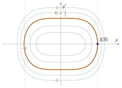

STEP III 2013，第 7 題
繼續之前，請先閱讀題目（原題為英文）。題目載於 STEP Support Programme 的題目資料庫： step.maths.org/questions/13-s3-q7
引子
大多數微分方程（differential equation）都是解不出來的。\(y'' + y^3 = 0\) 的解無法用我們熟悉的函數寫成公式，第 (iii) 部分那頭怪物就更不用說了。然而，我們仍然可以對這些解說出很多東西：它們保持有界（bounded）、它們會振盪、它們會漸趨平穩。訣竅在於找出一個由解及其導數（derivative）構成、而且永不增加的量。這樣一來，解就被困住了。
在物理學中，這個量通常就是能量（energy）。在碗中滾動的球不可能爬到比起始高度更高的地方，因為能量守恆，而在有摩擦時能量更會減少。本題把同樣的推理用於三條方程，其中最後一條是特意挑選的，要你自己發明那個「能量」。這個方法由李雅普諾夫（Aleksandr Lyapunov）於 1892 年提出，是研究微分方程最重要的工具之一。
動筆之前
在第 (i) 部分，把 \(y\) 看成質點的位置，把 \(x\) 看成時間。那麼 \(y'' = -y^3\) 就是牛頓定律，其中力為 \(-y^3\)。動能（kinetic energy）和勢能（potential energy）分別是甚麼？
動能是 \(\frac12(y')^2\)（取質量為 \(1\)），而力 \(-y^3\) 來自勢函數 \(V(y) = \frac14y^4\)，因為力等於 \(-V'(y)\)。總能量是 \(\frac12(y')^2 + \frac14y^4\)，即 \(\mathrm{E}\) 的一半。能量守恆（conservation of energy）所說的，正正就是 \(\mathrm{E}\) 為常數。
逐步解題
階段 1 守恆
由鏈式法則（chain rule）， \[\frac{\mathrm{d}\mathrm{E}}{\mathrm{d}x} = 2y'y'' + 2y^3y' = 2y'\bigl(y'' + y^3\bigr) = 0.\] 所以 \(\mathrm{E}\) 是常數，等於它在 \(x = 0\) 時的值：\(\mathrm{E} = 0 + \frac12 = \frac12\)。由於 \((y')^2 \geq 0\)，我們得到 \(\frac12y^4 \leq \frac12\)，所以 \(y^4 \leq 1\)，即 \(|y| \leq 1\)。■
這個解在 \(-1\) 與 \(1\) 之間振盪，在 \((y, y')\) 平面上描出閉曲線 \((y')^2 + \frac12y^4 = \frac12\)（圖 8.2.1）。
階段 2 耗散
對 \(\mathrm{E} = (v')^2 + 2\cosh v\) 求導。利用微分方程把 \(v''\) 換掉。結果的正負號是甚麼？
\[\frac{\mathrm{d}\mathrm{E}}{\mathrm{d}x} = 2v'v'' + 2\sinh v\,v' = 2v'\bigl(v'' + \sinh v\bigr) = 2v'\bigl(-xv'\bigr) = -2x(v')^2 \leq 0 \quad\text{當 } x \geq 0.\] \(xv'\) 這一項的作用有如摩擦，會帶走能量。所以當 \(x \geq 0\) 時，\(\mathrm{E}(x) \leq \mathrm{E}(0)\)。在 \(x = 0\) 處，\(\cosh(\ln 3) = \frac{3 + \frac13}{2} = \frac53\)，所以 \(\mathrm{E}(0) = \frac{10}{3}\)。因此 \[2\cosh v \leq (v')^2 + 2\cosh v = \mathrm{E}(x) \leq \tfrac{10}{3}, \qquad\text{所以}\qquad \cosh v(x) \leq \tfrac53. \qed\]
階段 3 發明能量
第 (iii) 部分沒有給任何提示。我們需要一個不會增加的函數 \(\mathrm{E} = (w')^2 + F(w)\)。
若 \(\mathrm{E} = (w')^2 + F(w)\)，則 \(\mathrm{E}' = 2w'w'' + F'(w)w'\)。\(F'(w)\) 應該是甚麼，才可以利用方程把 \(w''\) 換掉，最後只剩下 \((w')^2\) 的倍數？
我們希望 \(\mathrm{E}' = 2w'\bigl(w'' + w\cosh w + 2\sinh w\bigr)\)，所以需要 \(F'(w) = 2(w\cosh w + 2\sinh w)\)。由於 \(\frac{\mathrm{d}}{\mathrm{d}w}(w\sinh w) = \sinh w + w\cosh w\)，我們可以取 \[F(w) = 2w\sinh w + 2\cosh w, \qquad \mathrm{E} = (w')^2 + 2w\sinh w + 2\cosh w.\] 於是，利用方程可得 \[\frac{\mathrm{d}\mathrm{E}}{\mathrm{d}x} = -2(5\cosh x - 4\sinh x - 3)(w')^2.\]
證明對所有 \(x\) 都有 \(5\cosh x - 4\sinh x - 3 \geq 0\)。（把它用 \(e^x\) 表示，然後找出一個完全平方。）然後完成整個論證。
\(5\cosh x - 4\sinh x - 3 = \frac52(e^x + e^{-x}) - 2(e^x - e^{-x}) - 3 = \frac12e^x - 3 + \frac92e^{-x} = \frac12\bigl(e^{x/2} - 3e^{-x/2}\bigr)^2 \geq 0\)。所以 \(\mathrm{E}\) 永不增加。在 \(x = 0\) 處，\(\mathrm{E}(0) = \frac12 + 0 + 2 = \frac52\)。由於對任何 \(w\) 都有 \(w\sinh w \geq 0\)（兩個因子同號）， \[2\cosh w \leq (w')^2 + 2w\sinh w + 2\cosh w = \mathrm{E}(x) \leq \tfrac52, \qquad\text{所以}\qquad \cosh w(x) \leq \tfrac54. \qed\]

回顧
乘以 \(y'\)。在每一部分，\(\mathrm{E}'\) 都是 \(2y'\) 乘以方程的左方，再加上餘下的項。正是這個餘下的項決定了 \(\mathrm{E}\) 是守恆還是遞減。
能量限制位置。由於動能部分 \((y')^2\) 非負，\(\mathrm{E}\) 的上界就是勢能部分的上界，從而也給出 \(y\) 的界。
留意隱藏的平方。第 (iii) 部分的阻尼係數看來可能會變號，但它其實是一個經過偽裝的完全平方。
背後的數學
李雅普諾夫在 1892 年的博士論文中研究運動的穩定性（stability）：如果一個系統受到輕微擾動而偏離平衡，它會回到平衡，還是愈走愈遠？他的「第二方法」是找出一個函數，它在平衡點處取最小值，而且沿着解永不增加；這種函數現在稱為李雅普諾夫函數（Lyapunov function）。這樣，從平衡點附近出發的解就會一直留在平衡點附近。這個方法的美妙之處，在於它不需要解的公式，只需要微分方程本身，而這正是本題所展示的。現今，從飛機控制系統、電網以至生態系統，各種各樣事物的穩定性都是用李雅普諾夫函數來證明的。
物理與工程中的能量
第 (i) 部分是一個非線性振子（nonlinear oscillator）：它像彈簧，但回復力與位移的立方成正比。與簡諧振子不同，它的週期取決於振幅（振盪愈大，速度愈快），但能量守恆仍然把它困住。第 (ii) 部分加入了隨時間增強的阻尼（damping），能量因而逐漸流失。在工程學中，人們用能量方法來證明結構不會把自己搖散，以及控制系統不會振盪至失控。在偏微分方程（partial differential equation）的理論中，這類「能量估計」是證明解存在而且性質良好的主要工具；有關流體流動方程的問題，包括千禧年大獎難題（Millennium Prize Problems）之一的納維－斯托克斯（Navier–Stokes）問題，歸根究底就是能否找到這樣的界。
思維技巧
如果你解不出一條方程，就找一個由解構成、而且導數有確定正負號的量。它會給出解的界。
這種尋找一方面由物理引導（「能量是甚麼？」），另一方面由代數引導（「我要加上甚麼，導數才會化簡？」）。第 (iii) 部分示範了在沒有物理直覺可以依靠時，如何走代數這條路。
延伸練習
簡諧運動。對於 \(y'' + y = 0\)，其中 \(y(0) = A\)、\(y'(0) = 0\)，求守恆的能量，並由此推出 \(|y| \leq A\)。用精確解核對。
單擺。單擺的角度 \(\theta\) 滿足 \(\theta'' + \sin\theta = 0\)（採用適當的單位）。證明 \((\theta')^2 - 2\cos\theta\) 是常數。若單擺在角度 \(\theta_0\) 處由靜止開始，其中 \(|\theta_0| \leq \pi\)，證明 \(|\theta|\) 永不超過 \(|\theta_0|\)。若 \(|\theta_0| > \pi\)，哪裏會出問題？
阻尼。對於 \(y'' + 2ky' + y = 0\)，其中 \(k > 0\)，證明 \((y')^2 + y^2\) 遞減。它是否必定趨向零？
逃逸。對於 \(y'' - y^3 = 0\)，其中 \(y(0) = 1\)、\(y'(0) = 0\)，求一個守恆量，並證明它不能給出 \(y\) 的界。哪裏出了問題？
延伸閱讀
Steven Strogatz, Nonlinear Dynamics and Chaos（CRC Press）。第 6 章和第 7 章講述相平面、保守系統和李雅普諾夫函數。
D. W. Jordan & P. Smith, Nonlinear Ordinary Differential Equations（Oxford University Press）。一本標準的大學本科教科書，載有大量能量方法的例子。
Keith Devlin, The Millennium Problems（Basic Books）。書中有一篇關於納維－斯托克斯問題的淺白介紹。